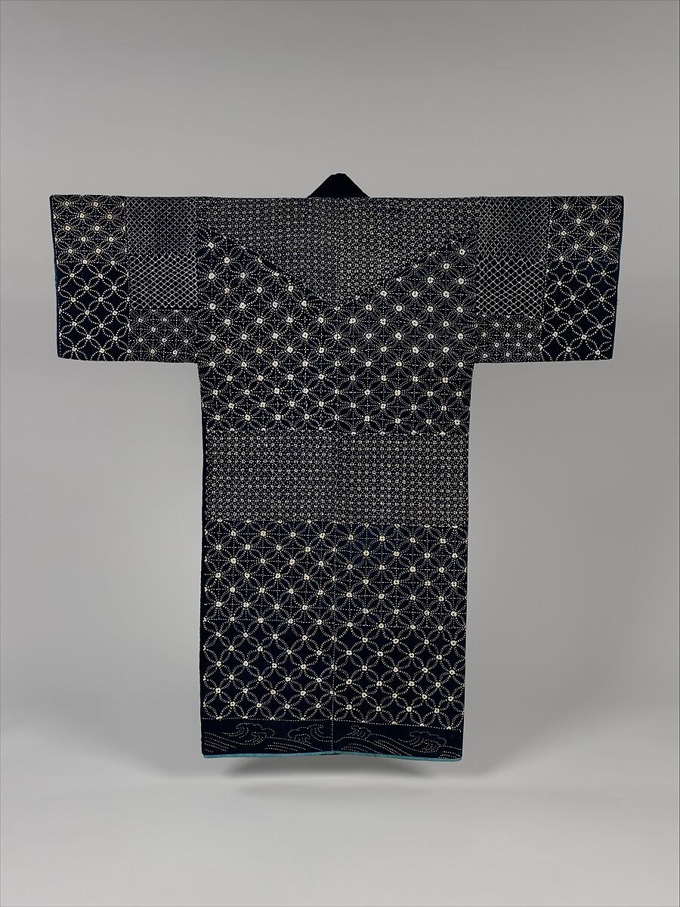
刺し子の線をたどる、布ともう少し暮らす
藍の布に白い糸。古い一着の模様を眺めながら、手元の布を長く楽しむ小さな工夫を考えます。
2026.11.10JAPANESE CULTURE JOURNAL
THE JOURNAL
茶、花、器、着物、食、文化。暮らしの中の小さな発見と、ものの向こうにある物語を。
SEASONAL PICKS
各カテゴリの読みものをご覧ください。季節のおすすめは、JavaScriptを有効にすると表示されます。
27 本の記事

藍の布に白い糸。古い一着の模様を眺めながら、手元の布を長く楽しむ小さな工夫を考えます。
2026.11.10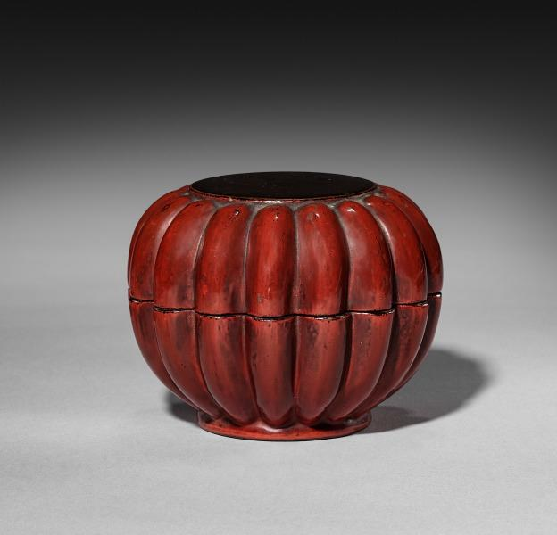
均一ではない色に、目がとまる。古い茶入を手がかりに、漆の表情と、使われてきたものを見る楽しみを探します。
2026.11.10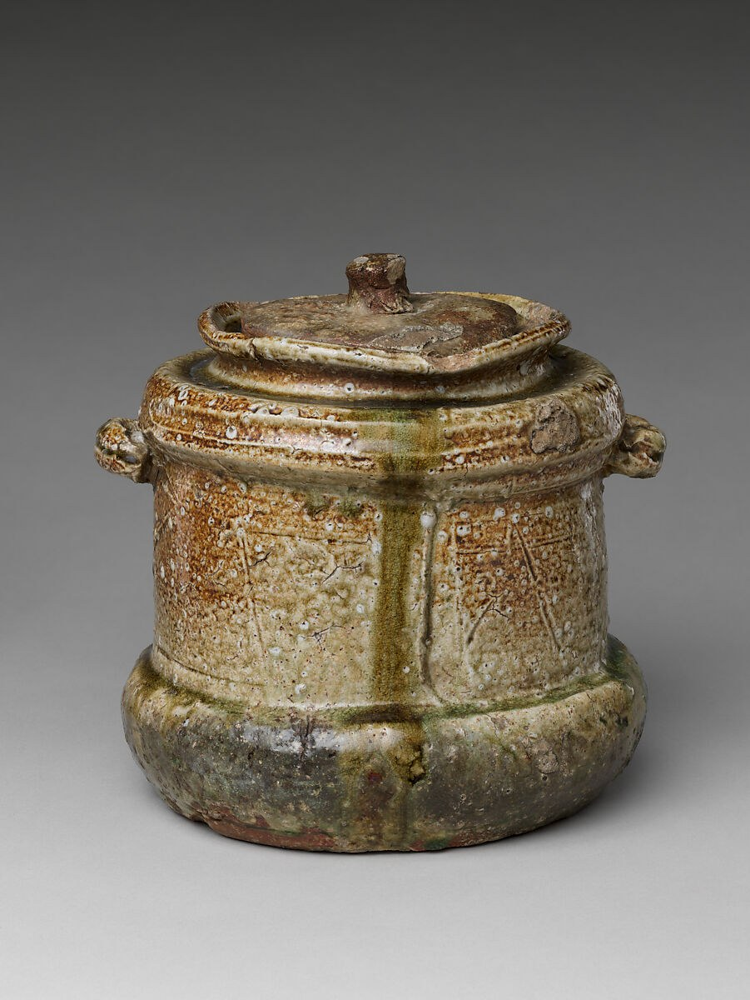
茶の湯の道具選びから、もの同士の関係を楽しむヒントを。買い足す前に、手元の器を二つ並べて眺めてみませんか。
2026.11.10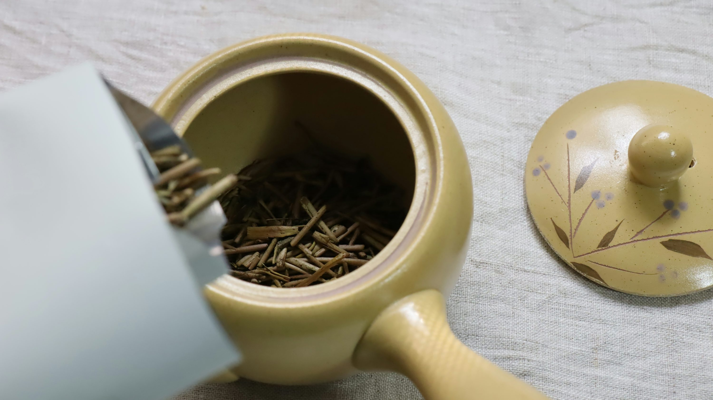
香ばしさの向こうにある、茶を焙じる仕事。ほうじ茶と石川の加賀棒茶を手がかりに、いつもの休憩を少しゆっくり楽しみます。
2026.11.09包む前に、一枚の布を広げてみる。風呂敷の色や柄と贈りものを合わせながら、手渡すまでの時間を楽しみませんか。
2026.11.09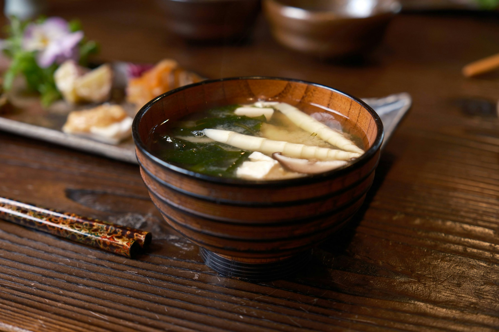
米、麦、豆。麹の違いと土地の味を手がかりに、小さな一パックを選ぶ。いつもの味噌汁から、自分の好きな味を見つけてみませんか。
2026.11.09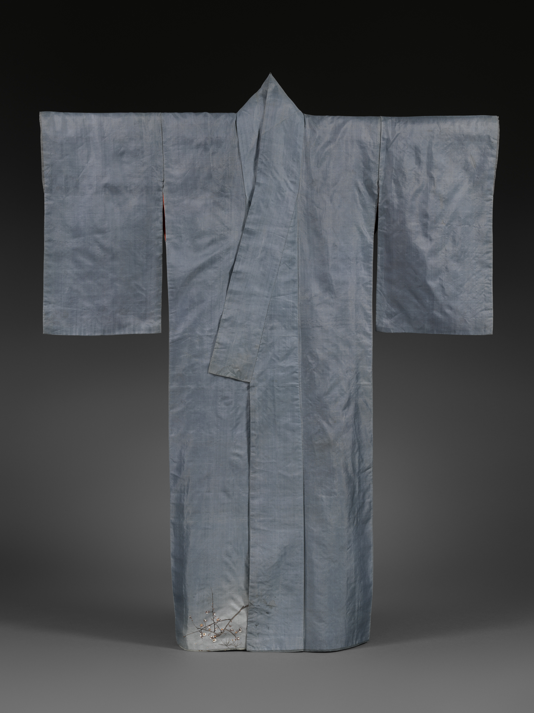
裾に見える小さな梅の枝。その先は、どこへ続くのでしょう。一枚の着物から、文様と布の重なりを眺めます。
2026.11.08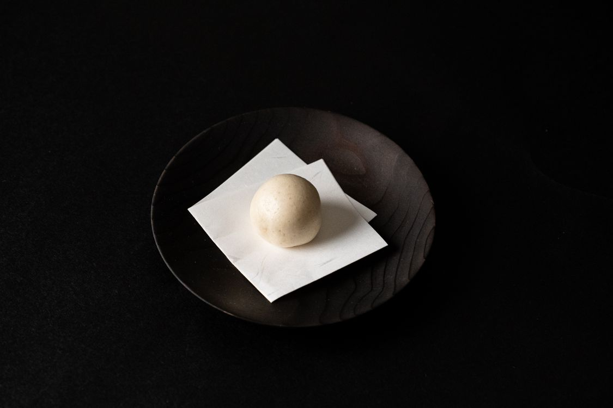
和菓子に添えられた小さな札。「菓銘」の由来を手がかりに、色やかたち、季節の風景を楽しんでみませんか。
2026.11.08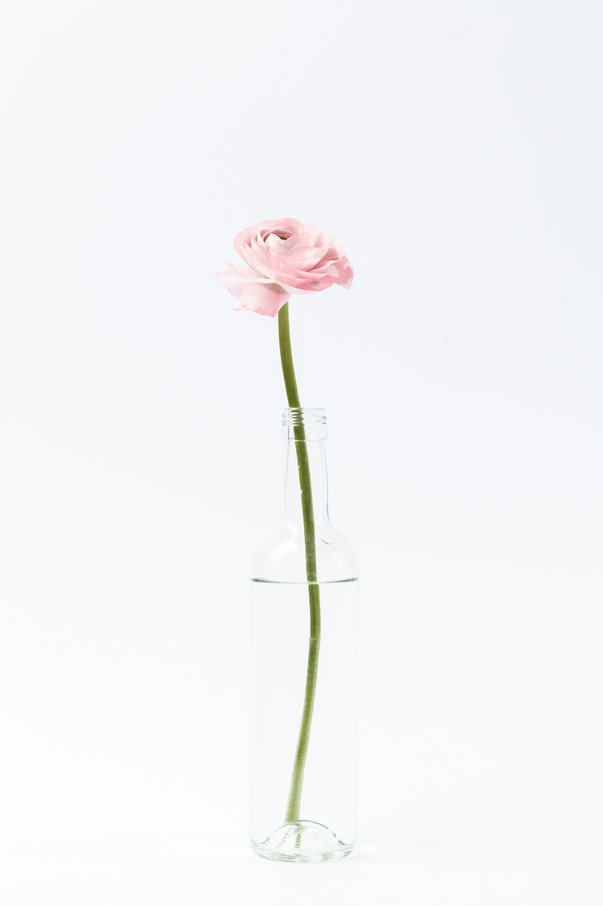
花の名前を覚える前に、茎の曲がりや葉の向きを眺めてみる。一輪と小さな器から、いけばなを見る楽しさへ。
2026.11.08一服のお茶を、手のひらで受けとめる。器から見えてくる、日本の美意識と日々の時間。
2026.11.08関東から沖縄へ。代表的な16産地を、土地と器の特徴からたどる。
2026.11.08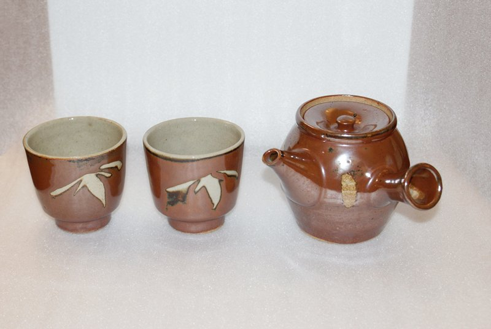
トーストをのせる皿を、いつもの白い一枚から替えてみる。縁のかたちや釉薬の色が変わるだけで、同じ朝食にも小さな発見があります。益子焼への入口は、難しい陶芸用語より、明日の朝に使いたい一枚でよいのです。
2026.11.08棚に並ぶ器が、全部おそろいでなくてもいい。滑らかなカップの隣に、細い凹凸のある鉢を置く。その違いを楽しむところから、作り手の個性が広がる笠間焼に近づいてみませんか。
2026.11.08色鮮やかな器は、特別な日のためだけのものではありません。白い皿が並ぶテーブルに、絵のある湯呑みをひとつ。いつものお茶が少し楽しくなる、そのくらいの小さな変化から九谷焼を迎えてみましょう。
2026.11.08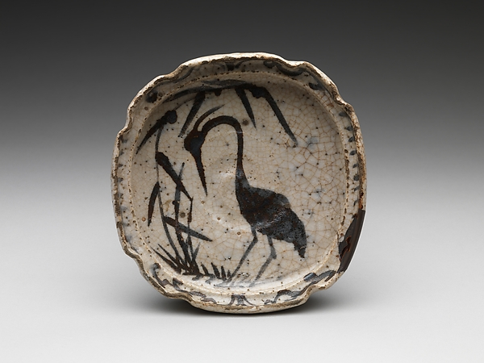
カレー、パスタ、買ってきた惣菜。器を楽しむために、毎回ごちそうを作る必要はありません。毎日の料理を思い浮かべながら、形も釉薬も幅広い美濃焼を見ていくと、選ぶ基準がぐっと身近になります。
2026.11.08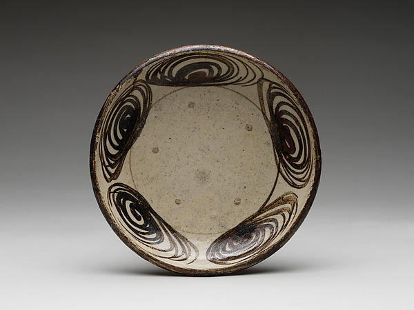
染付の器は和食専用、と思っていませんか。青い線のある皿にチーズやパンをのせると、いつもの食卓に新しい表情が生まれます。瀬戸の幅広いものづくりを、まずは白と青の組み合わせから見てみましょう。
2026.11.08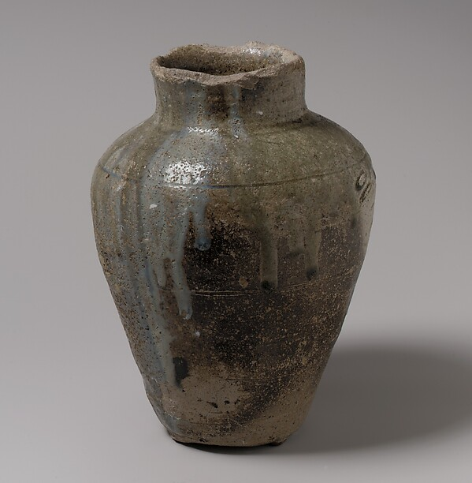
お茶の道具を一式そろえる必要はありません。家にあるカップと、小さな急須。それだけでも、湯を注いで待つ時間が暮らしに加わります。常滑焼を、茶道の知識より「何人分を淹れるか」から選んでみませんか。
2026.11.08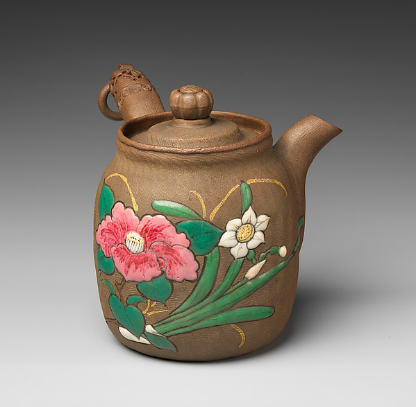
料理を作る器が、そのまま食卓の主役になる。萬古焼を知る入口に、そんな風景を思い描いてみましょう。大きな鍋を囲む日だけでなく、一人分の温かい料理にも、器を選ぶ楽しさがあります。
2026.11.08白い器は、どれも同じではありません。柔らかな白、土が少しのぞく白、影がきれいに落ちる白。信楽焼をたぬきの置物だけで思い浮かべていた人も、毎日使う鉢から見直してみませんか。
2026.11.08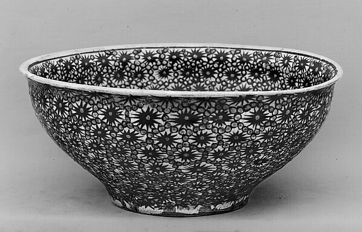
京都の器には、飾り棚にしまう上等なもの、というイメージがあるかもしれません。でも、毎日の料理を受けとめることから考えられた器もあります。特別さと使いやすさを、自分の食卓でつなげてみましょう。
2026.11.08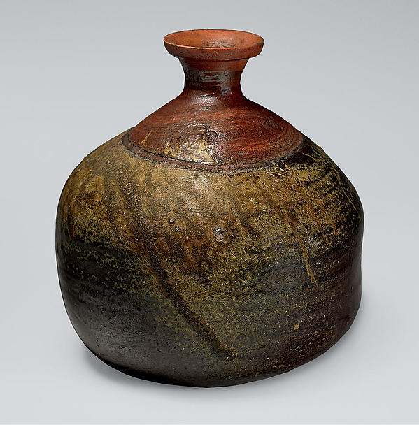
茶色い器は渋すぎる、と思ったら、白い豆腐や緑の野菜をのせる場面を想像してみてください。色数の少ない器だからこそ、食べ物の色や形が見えてくる。備前焼を、骨董の知識より今日の献立から眺めてみましょう。
2026.11.08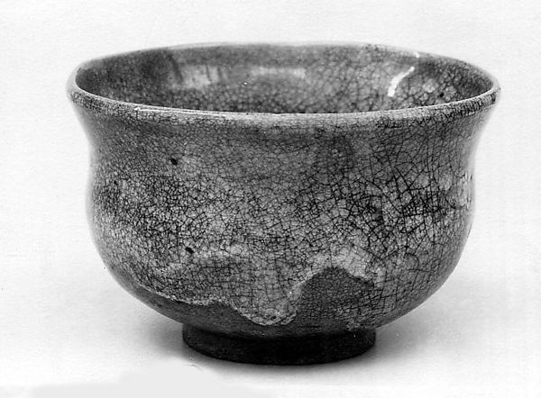
仕事の合間に、お茶を一杯。休憩の時間が短くても、手に取る器を選ぶ楽しさはあります。萩焼の柔らかな印象を、格式ある茶の席だけでなく、家の小さなテーブルへ連れてきてみましょう。
2026.11.08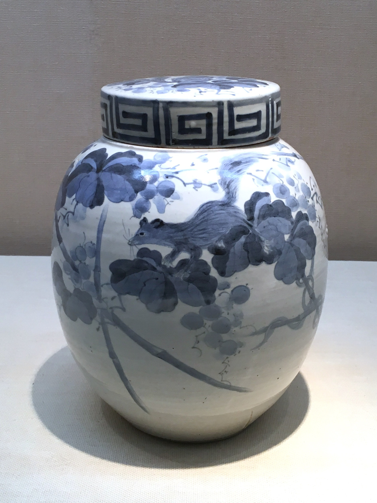
ご飯、麺、作り置きの副菜。毎日の食卓に何度も登場する器には、見飽きない楽しさがほしいもの。砥部焼の白と藍を、使う回数の多い一枚から取り入れてみませんか。
2026.11.08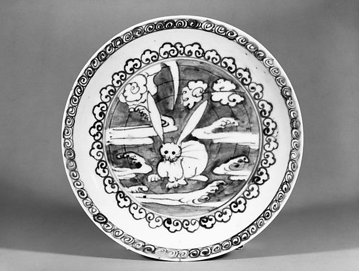
白い皿の、どこに料理を置くか。それだけで食卓の印象は変わります。有田焼を、特別な日に飾る器としてだけでなく、いつもの料理を盛るための道具として見てみましょう。
2026.11.08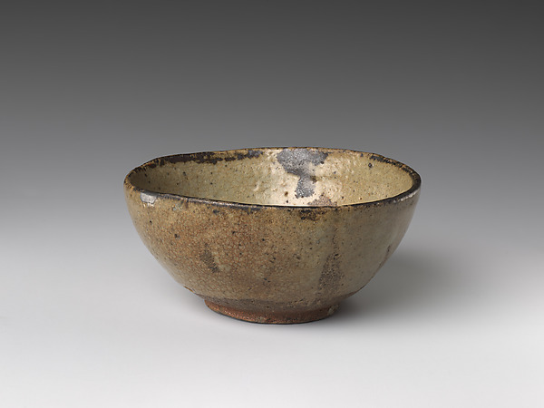
料理を盛る前と後で、器の見え方が変わる。唐津焼を選ぶなら、空の器の美しさに加えて、食べ物との組み合わせを想像してみませんか。
2026.11.08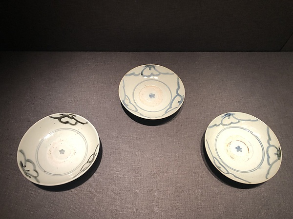
器は好き。でも食器棚は大きくない。そんなときは、何にでも使える一枚を探すより、自分がよく食べる料理を三つ思い浮かべてみましょう。波佐見焼を、暮らしのサイズから選ぶ入口です。
2026.11.08旅先で好きになった器を、帰ってからも使いたい。壺屋焼を選ぶときは、沖縄での思い出と、家で食べるいつもの料理を重ねてみましょう。飾っておくだけではない、旅の続きをつくれます。
2026.11.08写真の出典・利用条件は、各記事の写真下に記載しています。